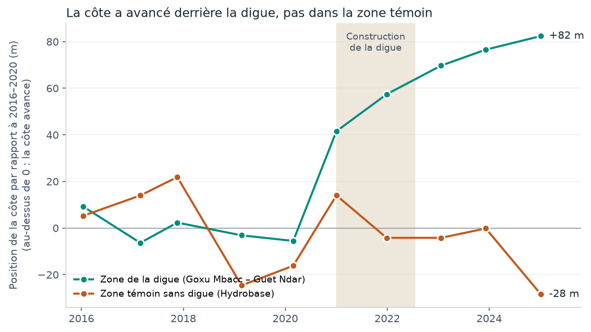

HACKATHON « DU SATELLITE À LA SOLUTION » – SENSAT / TRL SPACE – NOTE DE CONCEPT
Mesurer depuis l’espace le recul de la côte à Saint-Louis, tronçon par tronçon, pour agir avant que la mer n’atteigne les maisons
| Équipe | Ndèye Fatou SOW (référente), Abdoulaye DIOUF, Malick FALL – Master 2, UCAD |
| Question | À quelle vitesse la côte de la Langue de Barbarie recule-t-elle, tronçon par tronçon, et quelles maisons seront atteintes d’ici 2030–2035 ? |
| Zone | Langue de Barbarie, commune de Saint-Louis (15,75–16,08° N ; 16,45–16,58° O). Démonstration sur deux secteurs : Guet Ndar – Goxu Mbacc (digue) et Hydrobase – Guéthie (brèche) |
| Période | 2015 – 2025 : une image Sentinel-2 de saison sèche par an sur toute la côte (10 dates), et 372 dates au nord (Hydrobase – Goxu Mbacc) extraites avec CoastSat |
| Utilisateur | Mairie de Saint-Louis et Agence de développement municipal (ADM) ; appui technique possible du CSE |
| ODD | ODD 11 (cible 11.5), objectif principal ; ODD 13 (cible 13.1), objectif complémentaire |
En bref
La Langue de Barbarie est une bande de sable de quelques centaines de mètres entre l’océan Atlantique et le fleuve Sénégal. Elle abrite les quartiers de pêcheurs de Guet Ndar, Goxu Mbacc et Ndar Toute, parmi les plus densément peuplés du pays. Après les houles de 2017 et 2018, des centaines de familles ont été relogées. Plus au sud, la brèche ouverte en 2003 pour évacuer une crue s’est élargie jusqu’à plusieurs kilomètres et a modifié toute la dynamique de la côte.
L’information qui manque aujourd’hui : une mesure simple, régulière et partagée de la vitesse à laquelle la côte recule, tronçon par tronçon, et de la distance qui restera entre la mer et les maisons dans 5 à 10 ans. Sans elle, les relogements et les protections se décident souvent après la destruction, dans l’urgence.
Notre utilisateur principal est la mairie de Saint-Louis et l’ADM, qui décident des relogements et de l’occupation du littoral. Les autres utilisateurs ci-dessous sont des utilisateurs potentiels : aucun n’a encore validé notre concept.
| Utilisateur | Information fournie | Décision mieux préparée |
|---|---|---|
| Mairie de Saint-Louis, ADM | Vitesse de recul par tronçon de 50 m ; maisons dans la bande menacée ; marge restante en 2030 et 2035 | Quels quartiers reloger ou protéger en priorité, avant la saison des houles |
| CSE (Centre de Suivi Écologique), partenaire du défi | Série annuelle du trait de côte, méthode reproductible | Intégrer ce suivi au suivi national du littoral |
| DEEC, services techniques | Comparaison avant / après un ouvrage, avec une zone témoin | Une protection fonctionne-t-elle ? Où en construire une nouvelle ? |
| Protection civile | Tronçons à dune basse et à forte vitesse de recul | Où préparer l’évacuation et les secours |
Ce qu’il faudrait leur demander : les quartiers prioritaires, la fréquence de suivi utile (une ou deux fois par an), la forme préférée (carte imprimée, tableau, couche SIG) et les données de référence qu’ils possèdent (levés de plage, plans des ouvrages, listes de ménages relogés).
TefesSat est un service de suivi du littoral. Chaque saison sèche, une chaîne de traitement automatique trace le trait de côte sur une image Sentinel-2, le mesure sur 1 003 tronçons de 50 m répartis sur 50 km de côte, et produit pour chaque tronçon :
Les résultats sont livrés sous trois formes : une carte imprimable, un tableau par quartier et des couches SIG (GeoJSON). Un tableau de bord web (prototype, en français et en wolof) permet de cliquer sur un tronçon pour voir sa fiche ; les écrans de prototype présentés seront signalés comme tels, et toutes les valeurs affichées viennent des données réellement analysées.
| Source | Résolution | Dates | Usage |
|---|---|---|---|
| Sentinel-2 L2A (Copernicus) | 10 m | 10 images, janv. 2016 – janv. 2025, nuages < 5 % | Trait de côte sur toute la côte (indice MNDWI, notre script) |
| Sentinel-2 via CoastSat | 10 m | 372 dates, 2015 – 2025, nord de la zone | Série dense au nord (zone de la digue, Hydrobase) et contrôle indépendant |
| Sentinel-1 RTC (Copernicus) | 10 m | 3 dates : 2019, 2023, 2025 | Contrôle indépendant du trait de côte (radar) |
| Copernicus DEM GLO-30 | 30 m | Acquisitions 2011 – 2015 | Hauteur de la crête de dune |
| WorldPop 2025 (version contrainte) | 100 m | 2025 | Habitants par bâtiment |
| OpenStreetMap | – | Extrait d’octobre 2026 | Bâtiments, écoles, mosquées, postes de santé, noms de quartiers |
| Google Open Buildings et Microsoft | – | Versions publiées sur Source Cooperative | Bâtiments absents d’OpenStreetMap (confiance ≥ 70 %) |
Toutes ces données sont ouvertes et gratuites. Les images Sentinel ont été lues via Microsoft Planetary Computer, qui redistribue les produits Copernicus. Le détail des versions, licences et liens est donné dans l’inventaire des sources.
Exemple 1 – La digue de Guet Ndar fonctionne, et on le voit depuis l’espace. Une digue a été construite de 2021 à 2022 entre Goxu Mbacc et le quai de pêche de Guet Ndar. Nous avons comparé la position de la côte en 2023–2025 à sa position en 2016–2020, derrière la digue et dans une zone témoin sans ouvrage, juste au sud (Hydrobase).

| Zone | Tronçons | Déplacement 2023–2025 / 2016–2020 | Tronçons où la côte avance |
|---|---|---|---|
| Derrière la digue (Goxu Mbacc – Guet Ndar) | 48 | +78 m (vers la mer) | 100 % |
| Zone témoin sans digue (Hydrobase) | 67 | −9 m | 27 % |
Le changement commence au moment des travaux et seulement derrière l’ouvrage : si c’était une période plus calme, les deux zones auraient bougé ensemble.
Exemple 2 – Le danger s’est déplacé vers le sud.
| Secteur | Évolution mesurée | Distance mer – maisons en 2030 | En 2035 |
|---|---|---|---|
| Hydrobase sud | Recul de 7 à 10 m/an (environ 360 images par tronçon) | ≈ 60 m (pire cas : ≈ 55 m) | ≈ 25 m (pire cas : ≈ 15 m) |
| Guéthie – Tassinère (face à la brèche) | Rupture entre 2019 et 2021 (la langue de sable disparaît), puis recul de 20 à 60 m/an | ≈ 200 m, mais projection très incertaine : dans le pire cas, maisons atteintes dès 2030 | ≈ 10 m ; les premiers bâtiments peuvent être atteints |
| Guet Ndar, Ndar Toute, Santhiaba, Goxu Mbacc (zone de la digue) | Depuis la fin des travaux, la plage avance encore d’environ 4 m/an (147 images depuis 2022) | ≈ 80 à 190 m | ≈ 90 à 250 m |
Aucune maison n’est encore atteinte en 2030 dans nos projections : il reste une fenêtre pour agir. En 2035, la mer arriverait au bord des premières maisons de Guéthie : avec nos réglages de référence, 28 bâtiments (environ 70 habitants, bâtiments Google Open Buildings) seraient dans la bande menacée, mais ce nombre varie de 0 à 39 selon les réglages (section 7). Le message robuste est la marge : environ 10 m à Guéthie et 25 m à Hydrobase en 2035. Le « pire cas » retire de la marge l’incertitude de la projection à 95 %.
ODD 11, cible 11.5 (objectif principal) : notre concept contribue à réduire le nombre de personnes touchées par les catastrophes en donnant à la mairie de Saint-Louis la liste des tronçons où la mer se rapproche des maisons, pour reloger ou protéger avant la destruction. Ce que l’exemple démontre déjà : la mesure par tronçon et la marge restante dans deux secteurs. Ce qui reste un impact espéré : des relogements mieux anticipés, si la mairie utilise le suivi.
ODD 13, cible 13.1 (objectif complémentaire) : un suivi annuel renforce la capacité d’adaptation de la ville face à l’érosion côtière. Nous mesurons un recul observé ; nous ne l’attribuons pas automatiquement au changement climatique.
Reproduction : les scripts Python, leurs paramètres et les instructions pas à pas sont fournis dans le dossier (README). L’inventaire des sources liste les données, licences, outils utilisés et les contributions de chaque membre.